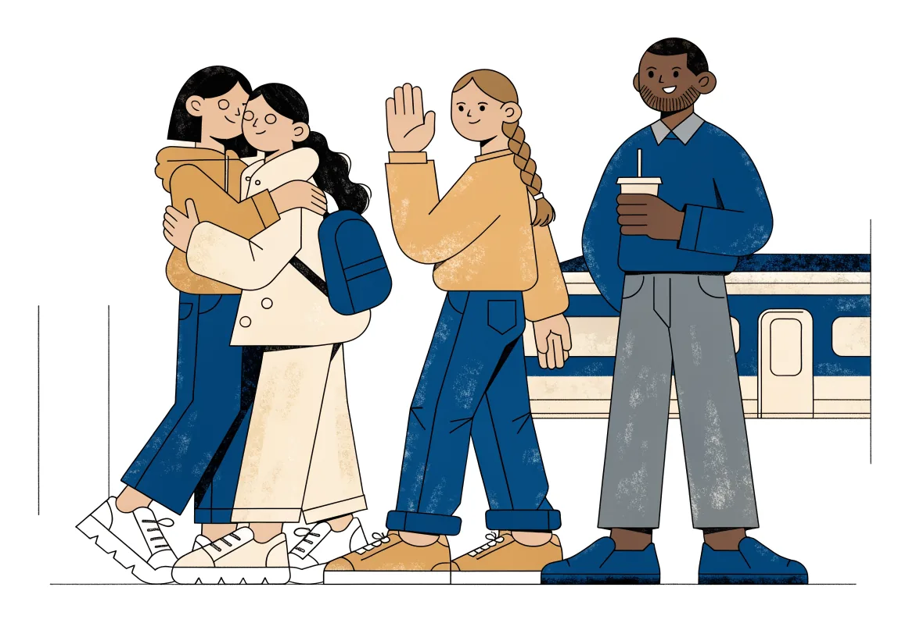
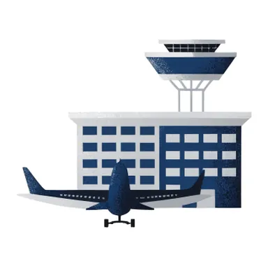
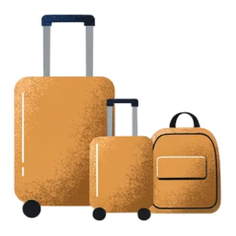
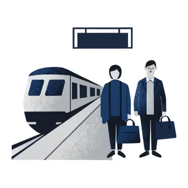
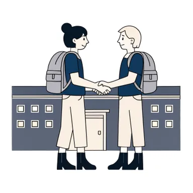
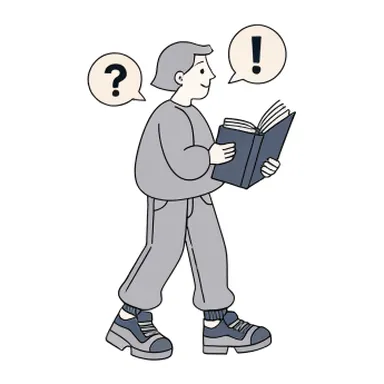
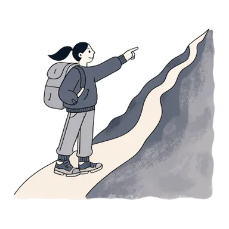
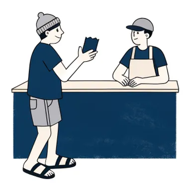
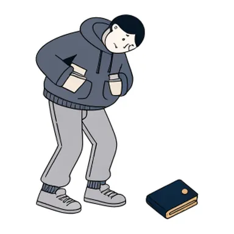
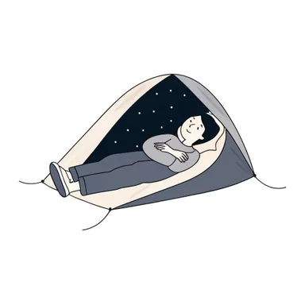

먼저 생각해 보세요.
Nachdem Mina gelandet war, nahm sie den Zug. 먼저 일어난 일은 무엇인가요?
gelandet war처럼 war나 hatte에 과거분사를 붙이면 더 먼저 일어난 일이에요.

1월이에요. 서울 친구 Mina가 겨울 방학을 맞아 Yuna를 보러 왔어요. 그런데 오는 길이 순탄하지 않았어요. 가방은 오지 않았고, 기차는 90분이나 늦었어요.
눌러서 들어 보세요.
먼저 생각해 보세요.
Nachdem Mina gelandet war, nahm sie den Zug. 먼저 일어난 일은 무엇인가요?
gelandet war처럼 war나 hatte에 과거분사를 붙이면 더 먼저 일어난 일이에요.
Lektion 5의 낱말 다섯 개를 다시 떠올려 보세요.
문법 Plusquamperfekt, nachdem, bevor, während, seitdem, bis
이 과를 마치면 여행에서 겪은 일을 순서대로 이야기하고, 문제가 생겼을 때 공손하게 항의할 수 있어요.
1월의 월요일 아침, 9b 교실이에요. 주말에 서울에서 Mina가 도착했어요.
들으면서 찾아보세요. Mina의 가방은 어디에 있나요?
그날 오후, 쾰른 중앙역의 여행 센터예요. 독일어를 못하는 Mina를 대신해 Yuna가 직원에게 말해요.
들으면서 찾아보세요. Mina는 표 값의 얼마를 돌려받나요?
두 대화를 듣고 답하세요.
Wo ist Mina gelandet?
Minas Koffer ist mit ihr in Frankfurt angekommen.
Er war in Seoul geblieben.
Was haben Yuna und Emma gemacht, bevor der Zug kam?
Was trägt Mina, seitdem der Koffer weg ist?
Wie viel Verspätung hatte der Zug?
Mina bekommt die Hälfte des Preises zurück.
Sie bekommt 25 Prozent zurück.
직원은 가방 문제를 어떻게 하라고 하나요?
낱말 32개예요. 낱말이나 예문 앞의 단추를 누르면 소리가 나요. 명사는 der, die, das를 색으로 구분했어요.
das Ausland 외국
Ich möchte ein Jahr im Ausland leben.나는 외국에서 일 년 살아 보고 싶어요.

der Flughafen, die Flughäfen 공항
Wir holen Mina am Flughafen ab.우리는 공항으로 Mina를 데리러 가요.
der Flug, die Flüge 비행, 항공편
Der Flug dauert dreizehn Stunden.비행은 열세 시간 걸려요.
landen, ist gelandet 착륙하다, 내리다
Das Flugzeug ist pünktlich gelandet.비행기가 제시간에 내렸어요.
abfliegen, ist abgeflogen (비행기로) 떠나다
Wir fliegen um zehn Uhr ab.우리는 열 시에 떠나요.

das Gepäck 짐
Mein Gepäck ist nicht angekommen.내 짐이 도착하지 않았어요.
der Reisepass, die Reisepässe 여권
Hast du deinen Reisepass?여권 챙겼어?
der Anschluss, die Anschlüsse 갈아타는 차편
Ich habe meinen Anschluss verpasst.갈아탈 차를 놓쳤어요.

der Bahnsteig, die Bahnsteige 승강장
Wir warten auf dem Bahnsteig.우리는 승강장에서 기다려요.
der Schalter, die Schalter 창구
Fragen Sie bitte am Schalter.창구에서 물어보세요.
unterwegs 가는 길에, 이동 중인
Mina ist seit sechzehn Stunden unterwegs.Mina는 열여섯 시간째 이동 중이에요.

der Schüleraustausch 학생 교류, 교환학생
Unsere Schule macht einen Schüleraustausch mit Wien.우리 학교는 빈의 학교와 학생 교류를 해요.
die Partnerschule, die Partnerschulen 자매 학교
Unsere Partnerschule ist in Frankreich.우리 자매 학교는 프랑스에 있어요.

die Fremdsprache, die Fremdsprachen 외국어
Deutsch ist meine zweite Fremdsprache.독일어는 내 둘째 외국어예요.
sich gewöhnen, hat sich gewöhnt 익숙해지다
Ich habe mich an das Wetter gewöhnt.나는 날씨에 익숙해졌어요.

das Abenteuer, die Abenteuer 모험
Die Reise war ein Abenteuer.그 여행은 모험이었어요.
der Unterschied, die Unterschiede 차이
Es gibt viele Unterschiede zwischen Korea und Deutschland.한국과 독일은 다른 점이 많아요.
fremd 낯선
Am Anfang war alles fremd.처음에는 모든 것이 낯설었어요.
erleben, hat erlebt 겪다, 경험하다
In Köln habe ich viel erlebt.쾰른에서 나는 많은 일을 겪었어요.
der Aufenthalt, die Aufenthalte 머무름, 체류
Mein Aufenthalt dauert ein Jahr.나는 일 년 동안 머물러요.
zurückkehren, ist zurückgekehrt 돌아가다, 돌아오다
Im Sommer kehre ich nach Korea zurück.여름에 나는 한국으로 돌아가요.

sich beschweren, hat sich beschwert 항의하다, 불만을 말하다
Ich möchte mich beschweren.항의하고 싶습니다.
die Beschwerde, die Beschwerden 항의, 불만
Ich schreibe eine Beschwerde.나는 항의 글을 써요.

verlieren, hat verloren 잃어버리다
Ich habe meine Fahrkarte verloren.나는 표를 잃어버렸어요.
buchen, hat gebucht 예약하다
Wir haben ein Hotel gebucht.우리는 호텔을 예약했어요.

übernachten, hat übernachtet 묵다, 하룻밤 자다
Wir übernachten in einer Jugendherberge.우리는 유스호스텔에서 묵어요.
die Unterkunft, die Unterkünfte 숙소
Die Unterkunft war sauber und billig.숙소는 깨끗하고 쌌어요.
erleichtert 마음이 놓인
Ich war erleichtert, als der Koffer kam.가방이 왔을 때 마음이 놓였어요.
nachdem ~한 뒤에
Nachdem ich gegessen hatte, ging ich ins Bett.나는 밥을 먹은 뒤에 자러 갔어요.
bevor ~하기 전에
Bevor ich abfliege, packe ich den Koffer.나는 떠나기 전에 가방을 싸요.
während ~하는 동안
Während ich koche, hörst du Musik.내가 요리하는 동안 너는 음악을 들어.
seitdem ~한 뒤로 줄곧
Seitdem ich hier wohne, spreche ich Deutsch.여기 산 뒤로 나는 독일어를 해요.
이 과의 낱말로 여덟 문제를 풀어요.
예문을 보고 답해 보세요.
Der Koffer war in Seoul geblieben. 가방이 서울에 남은 것은 언제 일인가요?
규칙
지난 일을 이야기하다가 그보다 더 먼저 일어난 일을 말할 때 Plusquamperfekt를 써요. haben과 sein의 과거형 hatte, war에 과거분사를 붙여요. haben을 쓸지 sein을 쓸지는 Perfekt와 같아요.
| Perfekt | Plusquamperfekt |
|---|---|
| ich habe gewartet | ich hatte gewartet |
| ich bin gelandet | ich war gelandet |
주의 움직이거나 상태가 바뀌는 동사는 sein과 써요. Sie war schon abgeflogen. Er war eingeschlafen.
예문을 보고 답해 보세요.
Nachdem Mina gelandet war, wollte sie den Zug nehmen. nachdem 문장에는 어떤 일이 오나요?
규칙
nachdem은 '~한 뒤에', bevor는 '~하기 전에'예요. 둘 다 동사를 맨 끝으로 보내요. nachdem 문장에는 먼저 일어난 일이 오므로 Plusquamperfekt를 쓰고, 뒤 문장에는 Perfekt나 Präteritum을 써요.
| 먼저 일어난 일 | 나중에 일어난 일 |
|---|---|
| Nachdem ich gegessen hatte, | bin ich ins Bett gegangen. |
| Ich hatte schon gepackt, | bevor das Taxi kam. |
주의 늘 하는 일을 말할 때는 nachdem 문장에 Perfekt를, 뒤 문장에 현재형을 써요. Nachdem ich gegessen habe, mache ich Hausaufgaben.
예문을 보고 답해 보세요.
Wir warten, bis er kommt. 언제까지 기다리나요?
규칙
세 낱말 모두 동사를 맨 끝으로 보내요. während는 두 일이 같은 때에 일어날 때, seitdem은 어떤 일이 시작되어 지금까지 이어질 때, bis는 어떤 일이 끝나는 때를 말할 때 써요.
| 보기 | |
|---|---|
| während | Während ich koche, hörst du Musik. |
| seitdem | Seitdem ich in Köln wohne, spreche ich jeden Tag Deutsch. |
| bis | Ich bleibe hier, bis du zurückkommst. |
주의 während 뒤에 명사가 오면 Genitiv를 써요. während der Reise, während des Flugs.
토요일 저녁, Yuna와 Thomas가 역에서 Mina를 기다려요. 듣고 답하세요.
Am Bahnsteig
Durchsage Achtung am Gleis fünf! Der Zug aus Frankfurt hat heute neunzig Minuten Verspätung.
Thomas Neunzig Minuten! Mina ist schon seit sechzehn Stunden unterwegs.
Yuna Sie hat mir geschrieben. Nachdem sie gelandet war, hat sie zwei Stunden auf ihren Koffer gewartet.
Thomas Und dann?
Yuna Der Koffer ist nicht gekommen. Deshalb hat sie den ersten Zug verpasst.
Thomas Komm, wir trinken einen Kakao, bis der Zug kommt.
Wie viel Verspätung hat der Zug aus Frankfurt?
Mina ist seit sechs Stunden unterwegs.
Sie ist schon seit sechzehn Stunden unterwegs.
Warum hat Mina den ersten Zug verpasst?
Thomas와 Yuna는 기차가 올 때까지 무엇을 하나요?
듣고 알맞은 것을 고르세요.
Emma네는 무엇을 먼저 했나요?
Nachdem wir gefrühstückt hatten, sind wir zum Bahnhof gefahren.
Lukas는 기차를 타기 전에 무엇을 했나요?
Bevor ich in den Zug eingestiegen bin, habe ich eine Fahrkarte gekauft.
Yuna는 언제부터 다시 한국어를 많이 하나요?
Seitdem Mina hier ist, spreche ich wieder viel Koreanisch.
할머니가 요리하는 동안 Elif는 무엇을 했나요?
Während meine Oma kochte, habe ich Fotos von Istanbul gemacht.
Yuna가 팟캐스트 게시판에 쓴 글이에요. 읽고 답하세요.
Mein Jahr im Ausland
Vor mehr als einem Jahr bin ich als Austauschschülerin nach Köln gekommen.
Bevor ich abgeflogen bin, hatte ich drei Monate Deutsch gelernt. Trotzdem habe ich am Anfang fast nichts verstanden.
Nachdem ich meine Gastfamilie kennengelernt hatte, war ich erleichtert. Alle waren sehr nett.
Am schwersten war das Essen. Ich musste mich an das Abendbrot gewöhnen. In Korea hatten wir abends immer warm gegessen.
Seitdem ich im Volleyballverein bin, habe ich viele Freunde. Heute ist mir Köln nicht mehr fremd.
Mein Tipp für alle, die ins Ausland gehen: Habt keine Angst vor Fehlern!
Wie lange hatte Yuna Deutsch gelernt, bevor sie abgeflogen ist?
Am Anfang hat Yuna alles verstanden.
Am Anfang hat sie fast nichts verstanden.
Wann war Yuna erleichtert?
Woran musste sich Yuna gewöhnen?
Yuna는 외국에 가는 사람들에게 무엇을 권하나요?
Mina가 독일에 온 날을 시간 순서로 적은 표예요. 보고 답하세요.
Minas Reise am Samstag
| Uhrzeit | Was ist passiert? |
|---|---|
| 12:10 | in Frankfurt gelandet |
| 14:30 | zwei Stunden gewartet, aber kein Koffer |
| 15:00 | den ersten Zug verpasst |
| 19:00 | Plan: in Köln ankommen |
| 20:30 | in Köln angekommen |
Wann ist Mina in Frankfurt gelandet?
Mina ist um 19 Uhr in Köln angekommen.
도착 예정은 19시였지만 20시 30분에 도착했어요.
Wie lange hat Mina auf den Koffer gewartet?
Plusquamperfekt예요. hatte와 war 가운데 알맞은 말을 고르세요.
Mina lange auf ihren Koffer gewartet.
Mina는 가방을 오래 기다렸어요.
Der Zug schon abgefahren.
기차는 이미 떠난 뒤였어요.
abfahren은 sein과 써요.
Ich das Formular schon ausgefüllt.
나는 서식을 이미 다 썼어요.
Wir zu spät angekommen.
우리는 너무 늦게 도착했어요.
Nachdem sie gelandet , hat sie Yuna geschrieben.
그 애는 내린 뒤에 Yuna에게 메시지를 보냈어요.
Er hatte seinen Reisepass zu Hause .
그는 여권을 집에 두고 왔어요.
한국어 뜻을 보고 알맞은 말을 고르세요.
Mina gelandet war, hat sie den Zug genommen.
Mina는 비행기에서 내린 뒤에 기차를 탔어요.
ich abfliege, packe ich meinen Koffer.
나는 떠나기 전에 가방을 싸요.
wir warteten, haben wir Kakao getrunken.
우리는 기다리는 동안 코코아를 마셨어요.
ich in Köln wohne, spreche ich jeden Tag Deutsch.
쾰른에 산 뒤로 나는 날마다 독일어를 해요.
Wir warten, der Koffer kommt.
우리는 가방이 올 때까지 기다려요.
wir das Formular ausgefüllt hatten, sind wir nach Hause gegangen.
서식을 다 쓴 뒤에 우리는 집에 갔어요.
항의할 때 쓰는 말이에요. 알맞은 말을 고르세요.
Ich möchte mich . Der Zug hatte Verspätung.
항의하고 싶습니다. 기차가 늦었어요.
Ich habe meinen Anschluss .
갈아탈 차를 놓쳤어요.
Könnten Sie mir bitte ?
좀 도와주실 수 있나요?
Das ist nicht in .
이건 옳지 않아요.
Ich hätte gern mein Geld .
돈을 돌려받고 싶습니다.
Wo ist der für Beschwerden?
항의하는 창구는 어디인가요?
낱말을 순서대로 눌러 문장을 만드세요.
나는 비행기에서 내린 뒤에 기차를 탔어.
가방은 서울에 남아 있었어.
우리는 기차가 올 때까지 기다려.
항의하고 싶습니다.
낱말과 뜻을 짝지으세요.
듣고 그대로 써 보세요.
Der Zug hatte Verspätung. 기차가 늦었어요.
Das ist nicht in Ordnung. 이건 옳지 않아요.
Wir warten, bis der Zug kommt. 기차가 올 때까지 기다리자.
Zuerst … Dann … Schließlich … 먼저 … 그다음에 … 마침내 …
Nachdem ich angekommen war, … 도착한 뒤에 …
Bevor ich abgeflogen bin, … 떠나기 전에 …
Das war ein Abenteuer! 그건 모험이었어!
Der Zug hatte neunzig Minuten Verspätung. 기차가 90분 늦었어요.
Ich habe meinen Anschluss verpasst. 갈아탈 차를 놓쳤어요.
Mein Koffer ist nicht angekommen. 가방이 도착하지 않았어요.
Ich habe meine Fahrkarte verloren. 표를 잃어버렸어요.
Ich möchte mich beschweren. 항의하고 싶습니다.
Das ist nicht in Ordnung. 이건 옳지 않아요.
Ich hätte gern mein Geld zurück. 돈을 돌려받고 싶습니다.
Könnten Sie mir bitte helfen? 좀 도와주실 수 있나요?
Was muss ich tun? 제가 뭘 해야 하나요?
Ich verstehe. 알겠습니다.
Vielen Dank für Ihre Hilfe. 도와주셔서 고맙습니다.
대화 B에서 역할을 하나 고르세요. 상대의 말은 음성으로 나오고, 내 차례에는 직접 말해요.
다녀온 여행을 떠올리며 적으세요. 완성된 문장을 소리 내어 읽어 보세요.
Letztes Jahr bin ich nach Jeju gereist.
Bevor ich abgeflogen bin, hatte ich ein Hotel gebucht.
Nachdem ich angekommen war, habe ich das Meer gesehen.
Es gab ein Problem: Unser Flug hatte zwei Stunden Verspätung.
Eine Beschwerde
기차가 많이 늦어서 갈아탈 차를 놓쳤어요. 철도 회사에 항의하는 메일을 써요. 일곱 문장쯤 써요.
Sehr geehrte Damen und Herren, am 16. Januar bin ich mit dem Zug von Frankfurt nach Köln gefahren. Der Zug hatte neunzig Minuten Verspätung. Ich hatte einen Platz reserviert, aber der Zug war sehr voll. Wegen der Verspätung habe ich meinen Anschluss verpasst. Niemand hat uns etwas erklärt. Das ist nicht in Ordnung. Ich hätte gern 25 Prozent des Preises zurück. Mit freundlichen Grüßen, Yuna Kim
다 쓴 뒤에 확인해 보세요.
Ich kann von einer Reise erzählen und sagen, was zuerst und was danach passiert ist.여행 이야기를 하면서 무엇이 먼저이고 무엇이 나중인지 말할 수 있어요.
Ich kann mich höflich beschweren und sagen, was ich möchte.공손하게 항의하고 바라는 것을 말할 수 있어요.
Ich kann nachdem, bevor, während, seitdem und bis richtig benutzen.nachdem, bevor, während, seitdem, bis를 알맞게 쓸 수 있어요.